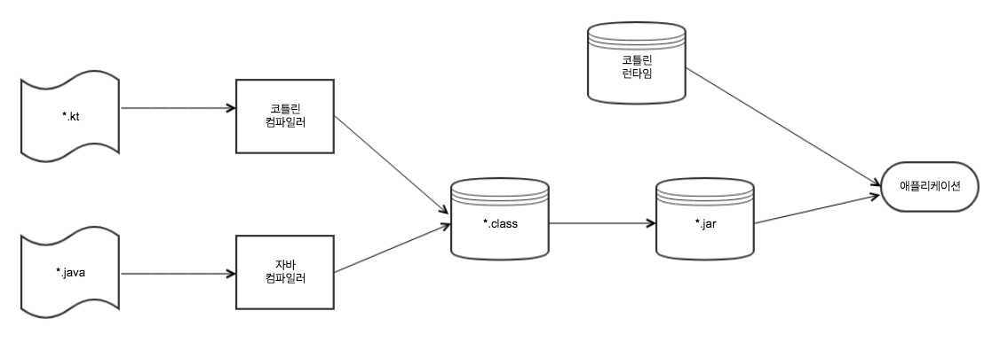

코틀린 소개
한주희, 07 June 2018
최근 회사에서 일부 신규 프로젝트를 코틀린으로 하겠다고 하여, 공부한 내용을 정리해 보고자 한다.
- 각 IDE별 설정 방법 링크 : https://kotlinlang.org/docs/tutorials/
- Refrence 링크 : https://kotlinlang.org/docs/reference/server-overview.html
위키를 참고 하여 코틀린에 대한 정보를 간략하게 정리해 보았다. (나무위키)
- 소개
- IntelliJ IDEA의 개발사 JetBrains에서 2011년에 공개한 프로그래밍 언어.
- JVM 기반의 언어이며, JAVA와의 상호 운용이 100% 지원된다.
- JVM 바이트코드가 기본이나
Kotlin/Native컴파일러를 사용하여 최종 컴파일 - 2017년 구글에서 안드로이드의 공식 언어로 채택하였다.
- 특징
- 간결한 문법과 런타임 오버헤드가 거의 없다.
- NUll Safety - 코틀린의 변수는 Nullable Types과 Non-Null Types 나뉘고, operator ‘?’등을 통해 Nullable로 만들어 Null발생에 대한 안정성을 제공한다.
- 예외 처리를 강제하지 않는다.
- Java의 ‘Integer’와 같은 별도의 wrapper class가 존재하지 않는다. 모든 primitive type은 객체 취급을 받는다.
내용 보강 [Kotlin in Action 1장 요약]
- 코틀린은 타입 추론을 지원하는 정적 타입 지정 언어다. 따라서 소스코드의 정확성과 성능을 보장하면서도 소스코드를 간결하게 유지할 수 있다.
- 코틀린은 객체지향과 함수형 프로그래밍 스타일을 모두 지원한다. 코틀린에서는 일급 시민 함수를 사용해 수준 높은 추상화가 가능하고,
불변 값 지원을 통해 다중 스레드 애플리케이션 개발과 테스트를 더 쉽게 할 수 있다. - 코틀린을 서버 애플리케이션 개발에 잘 활용할 수 있다. 코틀린은 기존 자바 프레임워크를 완벽하게 지원하는 한편, HTML 생성기나
영속화persistence등의 일반적인 작업을 위한 새로운 도구를 제공한다. - 코틀린을 안드로이드에도 활용할 수 있다. 코틀린의 런타임 라이브러리는 크기가 작고, 코틀린 컴파일러는 안드로이드 API를 특별히 지원한다.
그리고 코틀린의 다양한 라이브러리는 안드로이드에서 흔히 하는 작업에 사용할 수 있으면서 코틀린과 잘 통합될 수 있는 함수를 제공한다. - 코틀린은 무료며 오픈소스다. 또한 주요 IDE와 빌드 시스템을 완전히 지원한다.
- 코틀린은 실용적이며 안전하고, 갈견하며 상호운용성이 좋다. 이는 코틀린을 설계하면서 일반적인 작업에 대해 이미 잘 알려진 해법을 채택하고,
NullPointerException과 같이 흔히 발생하는 오류를 방지하며, 읽기 쉽고 간결한 코드를 지원하면서 자바와 아무런 제약 없이 통합될 수 있는 언어를 만드는데 초점을 맞췄다는 뜻이다.
코틀린 코드 컴파일
자바와 마찬가지로 코틀린도 컴파일 언어다.
- 코틀린 소스코드를 저장할 때는 보통 .kt라는 확장자를 파일에 붙인다.
- 코틀린 컴파일러는 자바컴파일러가 자바 소스코드를 컴파일할 때와 마찬가지로 코틀린 소스코드를 분석해서 .class파일을 만들어낸다.
[코틀린 빌드 과정] 